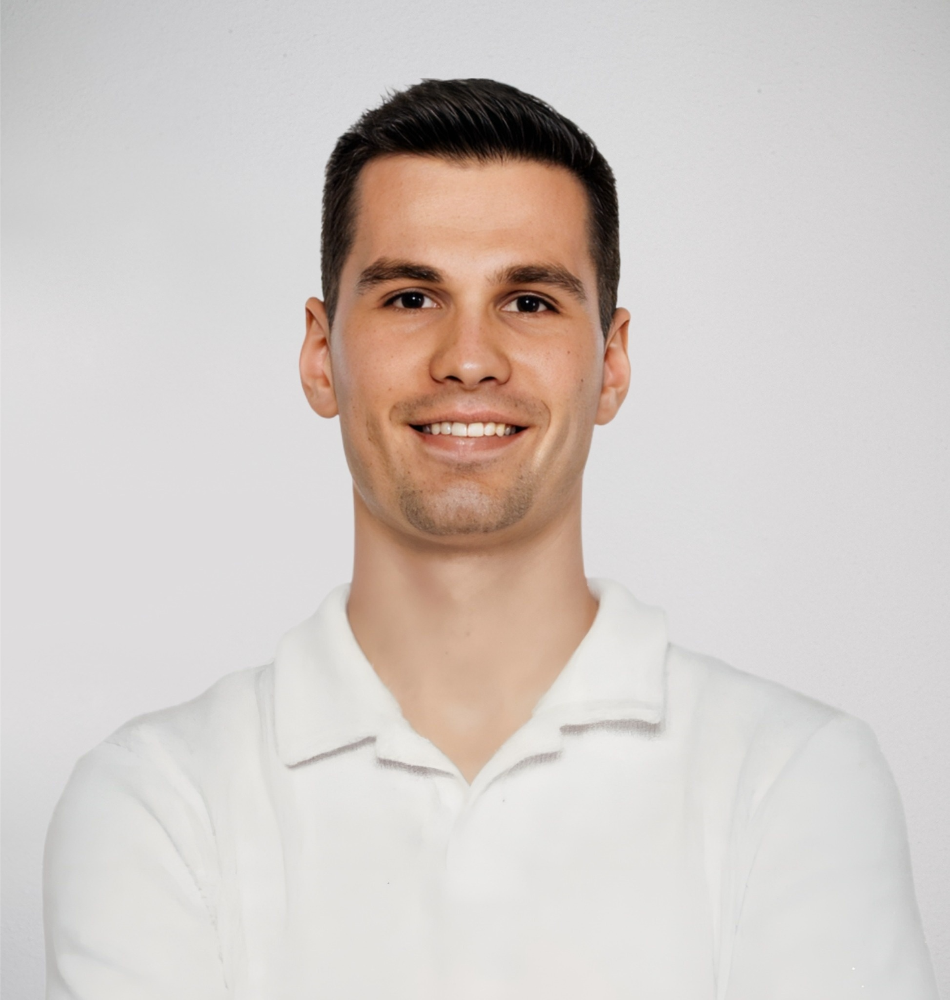
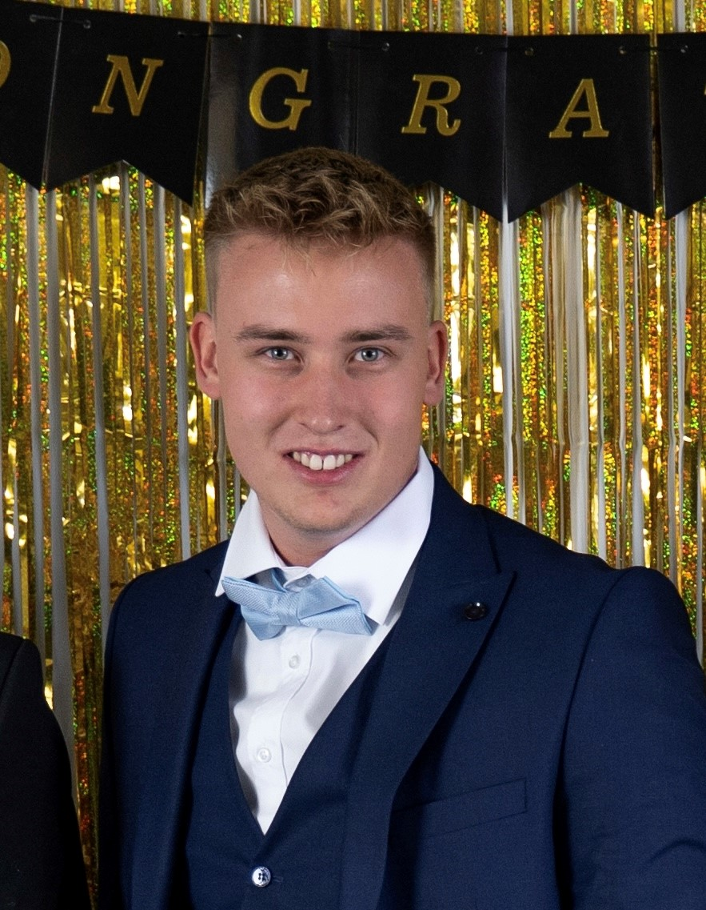
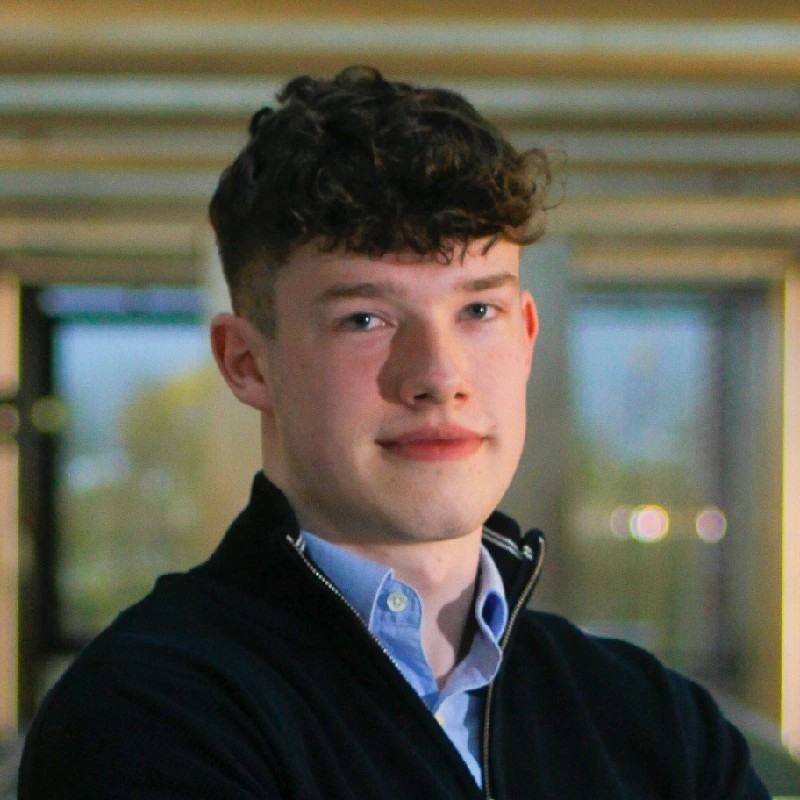
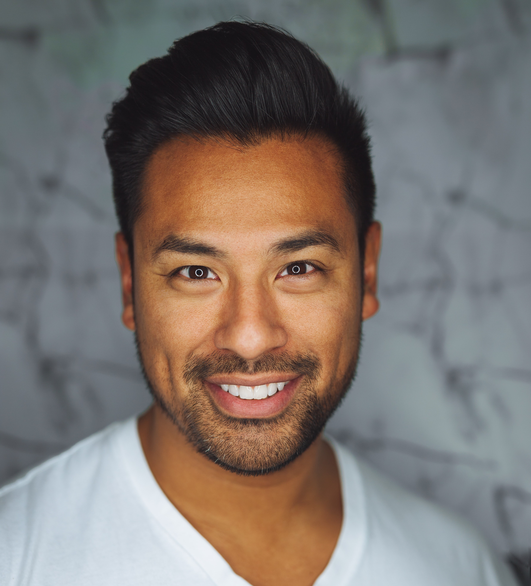
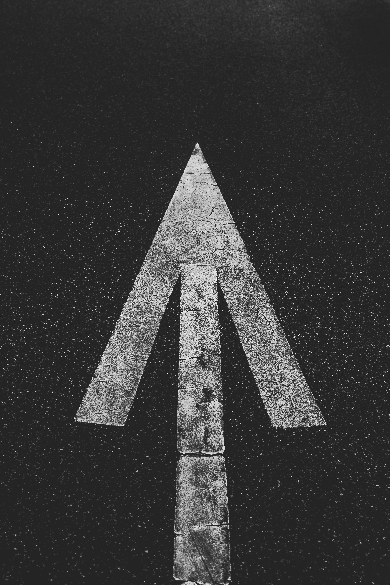
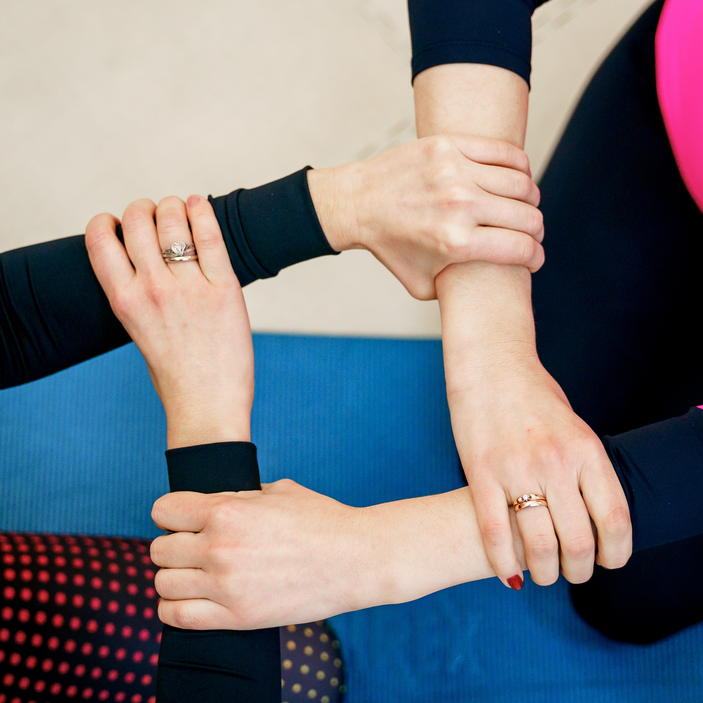

Präsidium und Vereinsbeirat des KKP Vereins
Vereinspräsident
Sven Plasch
Sven Plasch repräsentiert unseren Sportverein mit Stolz und Leidenschaft. Als visionärer Führer setzt er sich für Fairplay, Teamgeist und den Erfolg unserer Mannschaften ein. Durch kontinuierlichen Dialog mit Mitgliedern und Fans fördert er das Gemeinschaftsgefühl und treibt die Entwicklung unseres Vereins voran.
Vizepräsident
Daniel Kixmüller
Als erfahrene Führungskraft fördert Daniel den Teamgeist und setzt sich für Fairplay ein. Durch kontinuierliche Kommunikation mit Mitgliedern und Fans stärkt er die Gemeinschaft und spielt eine entscheidende Rolle bei der positiven Entwicklung unseres Sportvereins.
Vorstandsmitglied
Simon Kerler
Mit großer Hingabe und einem klaren Blick für die Bedürfnisse unserer Vereinsmitglieder trägt Simon Kerler als Vorstandsmitglied maßgeblich zur erfolgreichen Gestaltung unseres Sportvereins bei. Sein Engagement erstreckt sich von der Förderung des Gemeinschaftssinns bis zur strategischen Vereinsentwicklung.
Vorsitzender des Vereinsbeirats
Matthias Berger
Matthias Berger, unser engagierter Vorsitzender des Vereinsbeirats, spielt eine zentrale Rolle bei der Gestaltung einer robusten und inklusiven Struktur für unseren Sportverein. Seine beispielhafte Führungsqualität und sein strategisches Denken gewährleisten, dass die Stimmen aller Vereinsmitglieder gehört werden und eine starke Gemeinschaft aufgebaut wird.
Stellvertretender Vorsitzender
Nadine Schmidt
Nadine unterstützt aktiv den Vorsitzenden des Vereinsbeirats und integriert die Ideen und Anliegen der Mitglieder in die Vereinsstrategie. Sie fördert einen inklusiven Ansatz und schafft Möglichkeiten für vielfältige Beteiligung innerhalb des Vereins.
Mitglied
Marco Weber
Marco beteiligt sich aktiv an Diskussionen und Entscheidungen im Vereinsbeirat, um sicherzustellen, dass die Interessen der Mitglieder in die Vereinsaktivitäten einfließen. Er setzt sich für Offenheit und Transparenz ein und arbeitet daran, eine inklusive Vereinskultur zu schaffen.
Unsere Vision
Gemeinsam zum Erfolg - Eine inspirierende Fußballgemeinschaft schaffen, die nicht nur auf dem Spielfeld, sondern auch außerhalb durch Teamgeist, Respekt und Engagement überzeugt. Unsere Vision ist es, eine Sportkultur zu fördern, die Talente entwickelt, Gemeinschaft stärkt und ein stolzes Zuhause für alle Mitglieder bietet.
Unsere Mission
Unsere Mission ist es, eine integrative und vielfältige Fußballgemeinschaft aufzubauen, die durch Fairplay, gemeinsame Werte und Zusammenarbeit geprägt ist. Wir streben danach, exzellenten Fußball zu spielen, indem wir Talente fördern, kontinuierlich lernen und uns weiterentwickeln. Durch transparente Kommunikation und die Einbeziehung aller Mitglieder möchten wir eine positive soziale Wirkung in unserer Gemeinschaft erzielen und den Fußball als Instrument für persönliches Wachstum und Gemeinschaftsbindung nutzen.